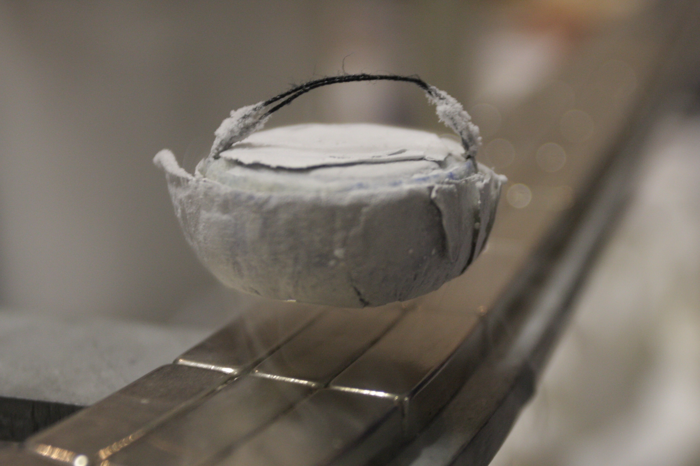

|Materials Science and Engineering |Programming |
-OCTOBER 20, 2023
PROGRAMMABLE MATTER

Programmable matter is matter which has the ability to change its physical properties (shape, density, moduli, conductivity, optical properties, etc.) in a programmable fashion, based upon user input or autonomous sensing. Programmable matter is thus linked to the concept of a material which inherently has the ability to perform information processing.
Programmable matter is a term originally coined in 1991 by Toffoli and Margolus to refer to an ensemble of fine-grained computing elements arranged in space. Their paper describes a computing substrate that is composed of fine-grained compute nodes distributed throughout space which communicate using only nearest neighbor interactions. In this context, programmable matter refers to compute models similar to cellular automata and lattice gas automata. The CAM-8 architecture is an example hardware realization of this model. This function is also known as "digital referenced areas" (DRA) in some forms of self-replicating machine science.
In the early 1990s, there was a significant amount of work in reconfigurable modular robotics with a philosophy similar to programmable matter.
As semiconductor technology, nanotechnology, and self-replicating machine technology have advanced, the use of the term programmable matter has changed to reflect the fact that it is possible to build an ensemble of elements which can be "programmed" to change their physical properties in reality, not just in simulation. Thus, programmable matter has come to mean "any bulk substance which can be programmed to change its physical properties."
In the summer of 1998, in a discussion on artificial atoms and programmable matter, Wil McCarthy and G. Snyder coined the term "quantum wellstone" (or simply "wellstone") to describe this hypothetical but plausible form of programmable matter. McCarthy has used the term in his fiction.

In 2002, Seth Goldstein and Todd Mowry started the claytronics project at Carnegie Mellon University to investigate the underlying hardware and software mechanisms necessary to realize programmable matter.
In 2004, the DARPA Information Science and Technology group (ISAT) examined the potential of programmable matter. This resulted in the 2005–2006 study "Realizing Programmable Matter", which laid out a multi-year program for the research and development of programmable matter.
In 2007, programmable matter was the subject of a DARPA research solicitation and subsequent program.
From 2016 to 2022, the ANR has funded several research programs coordinated by Julien Bourgeois and Benoit Piranda at the FEMTO-ST Institute, which is taking the lead in the Claytronics project initiated by Intel and Carnegie Mellon University.
In one school of thought the programming could be external to the material and might be achieved by the "application of light, voltage, electric or magnetic fields, etc." (McCarthy 2006). For example, a liquid crystal display is a form of programmable matter. A second school of thought is that the individual units of the ensemble can compute and the result of their computation is a change in the ensemble's physical properties. An example of this more ambitious form of programmable matter is claytronics.
There are many proposed implementations of programmable matter. Scale is one key differentiator between different forms of programmable matter. At one end of the spectrum reconfigurable modular robotics pursues a form of programmable matter where the individual units are in the centimeter size range. At the nanoscale end of the spectrum there are a tremendous number of different bases for programmable matter, ranging from shape changing molecules[10] to quantum dots. Quantum dots are in fact often referred to as artificial atoms. In the micrometer to sub-millimeter range examples include MEMS-based units, cells created using synthetic biology, and the utility fog concept.
An important sub-group of programmable matter are robotic materials, which combine the structural aspects of a composite with the affordances offered by tight integration of sensors, actuators, computation and communication, while foregoing reconfiguration by particle motion.
Examples:
- Simple
- Complex fluids
- Metamaterials
- Shape-changing molecules
- Electropermanent magnets
Robotics-based approaches:
- Self-reconfiguring modular robotics
- Claytronics
- Quantum wells
- Synthetic biology
Popular Articles
Superconductivity
The science behind materials with zero resisitance and interesting magnetic properties that can cause levitation of materials.
March 16, 2024

Nanomaterials
Materials tend to show different properties under smaller dimensions .For example, materials that are opaque in the macroscopic domain may become transparent on the nanoscale; chemically stable materials become combustible, and electrical insulators become conductors etc.
March 17, 2024

Quantum Dots
Man-made semiconductor nanoscale crystals that have the ability to convert a spectrum of light into different colors.
March 17, 2024

Material formation
The emergence of materials at the beginning of time, why materials are what they are.
March 17, 2024